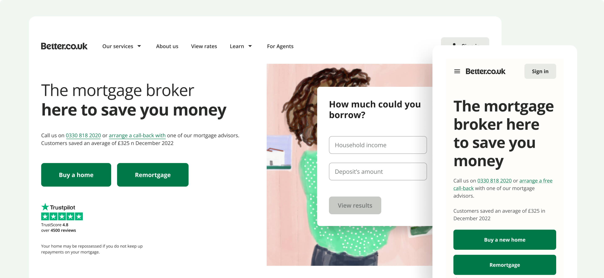
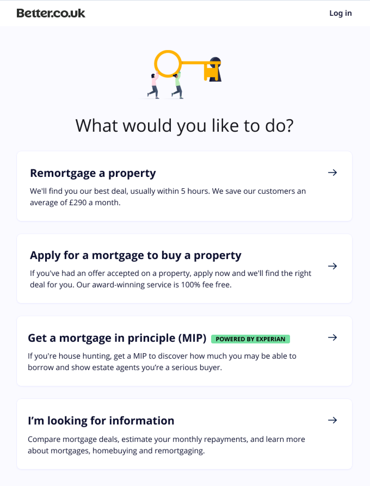
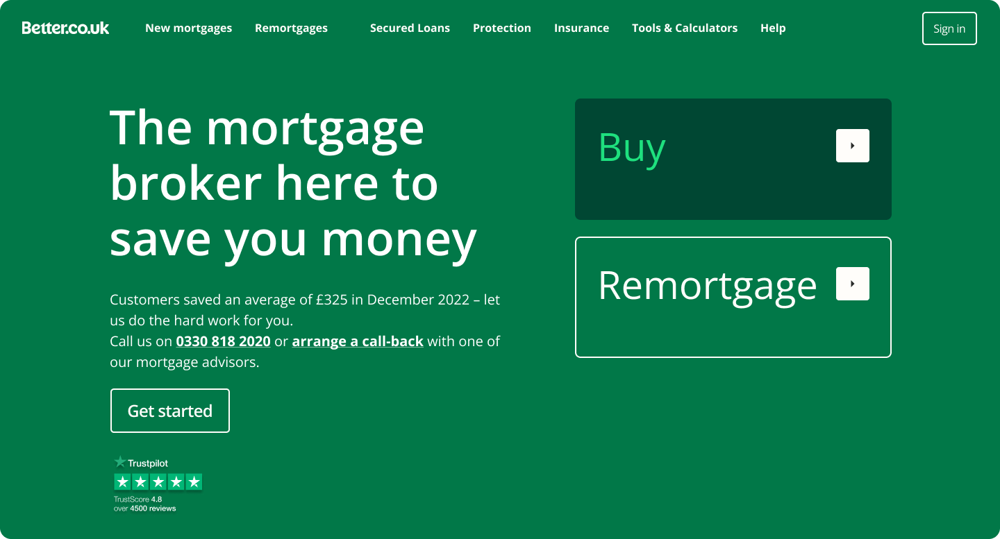
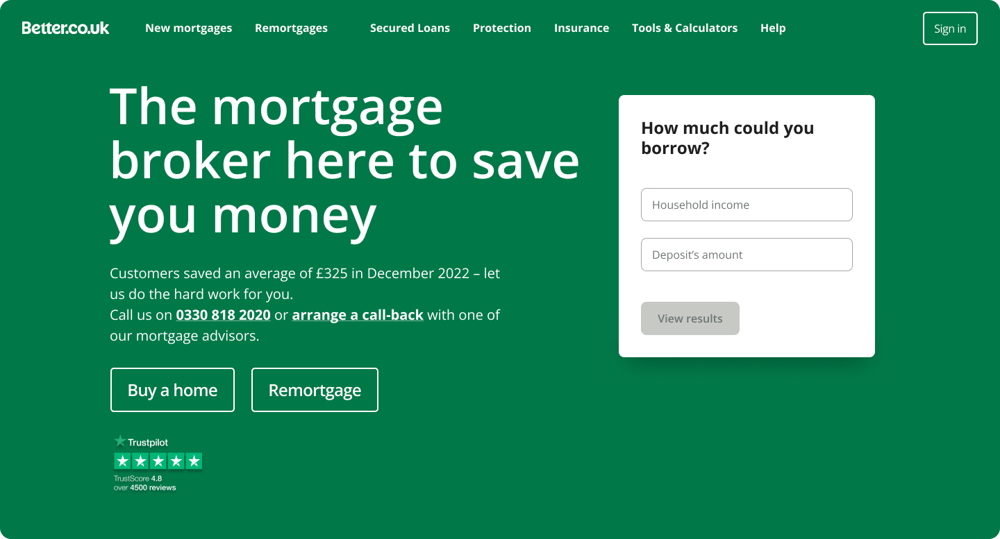
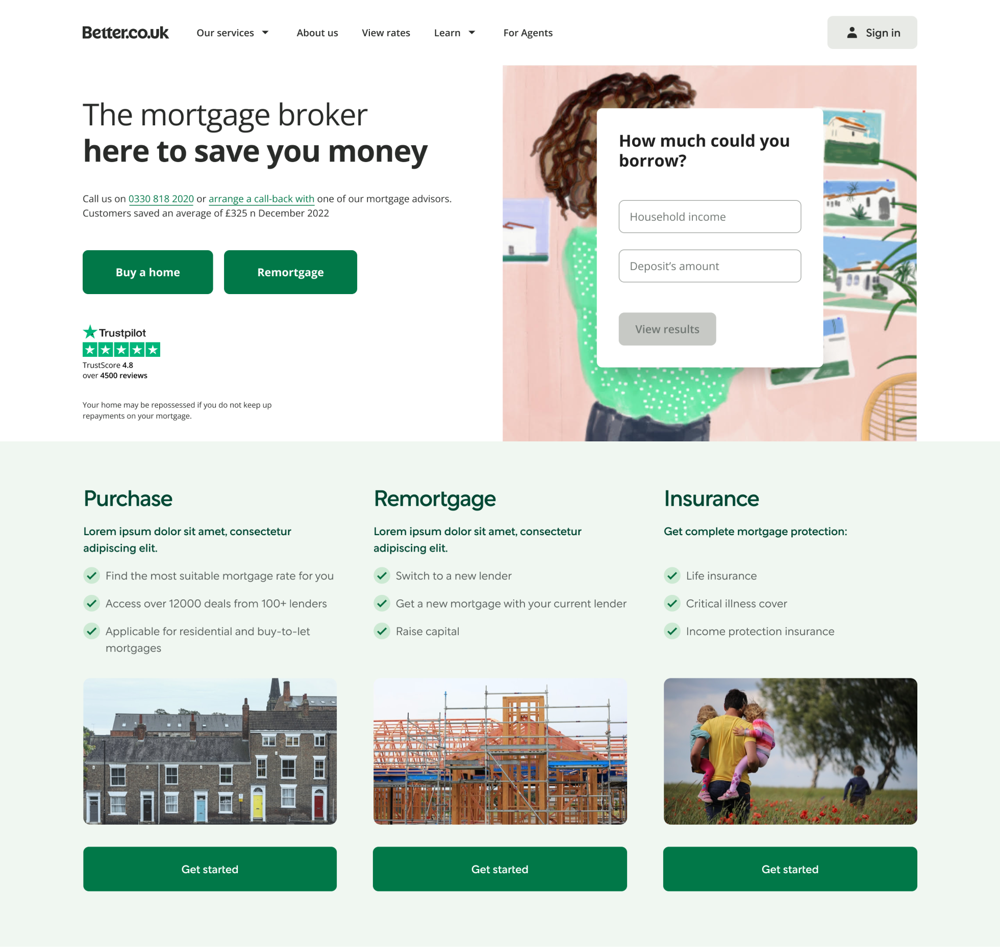
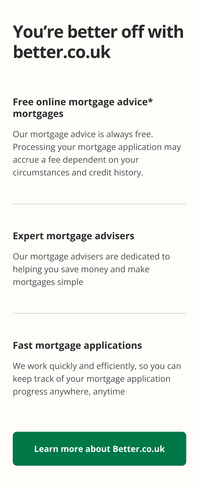
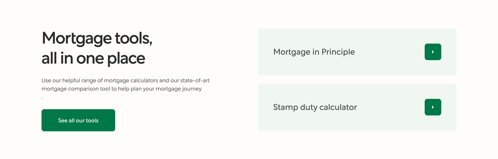
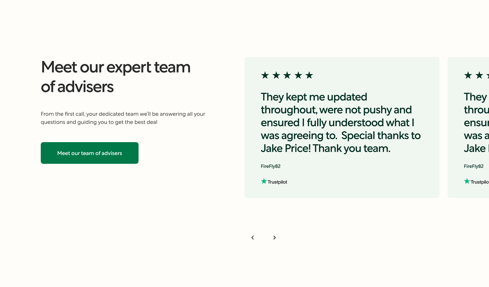

Better.co.uk Homepage redesign

Overview
A high-traffic page that wasn’t moving enough users forward
In 2023, Better.co.uk’s homepage received around 11,700 visitors in 30 days.
Only 4.31% reached Get Started, the page where users chose what they wanted to do next.
The homepage had also changed very little since 2020. Content was outdated, the interface was inconsistent, and several competing routes made it harder to understand where to go.
Insights
Too many routes, not enough clarity
FullStory showed that only 4.31% of homepage visitors reached Get Started online.
From there, users could choose to buy, remortgage, get a mortgage in principle, or explore tools and information.
The data showed that not everyone arriving at Better was ready to apply straight away. Some users were still researching, checking affordability, or trying to understand their options.
That meant the homepage needed to support both users ready to act and users still exploring.

- Homepage visitors
- 11,729
- Reached Get Started
- 506
- Progression rate
- 4.31%
Hypothesis
Should the homepage prioritise action or exploration?
The data showed two different types of intent, so I ran an A/B test to compare two approaches.
Variation 1 focused on users ready to act, with Buy and Remortgage as the main routes.
Variation 2 kept those direct journeys but also surfaced the mortgage calculator for users who were still exploring their options.
We moved forward with Variation 2.
The calculator had already been the most-clicked option from Get Started, and when we surfaced it directly on the homepage, it became the most-clicked option there too.
This gave us confidence to use that direction for the wider redesign.


Redesign
Turning the test into a clearer homepage
The final redesign used the test findings to simplify the homepage structure and make the main routes easier to scan.
I removed outdated comparison-style content, reorganised the page around clearer customer needs, and introduced more relevant supporting content such as advice, reviews and tools.
While this work was in progress, we also decided to implement a new design system. The homepage redesign became one of the first opportunities to apply the new visual style and components across the experience.




Learnings
Improving one step revealed new opportunities
The redesign made the routes from the homepage clearer, but it also showed that improving the first step was only part of the journey.
A significant group of users were not ready to apply for a mortgage yet, but were still researching, checking affordability and looking for guidance. This opened up an opportunity to think beyond the application journey and explore a learning centre or mortgage hub where users could access useful content, tools and support from advisers before they were ready to apply.
It shifted the conversation from simply moving users into an application to thinking about how Better could support them throughout a longer mortgage journey.